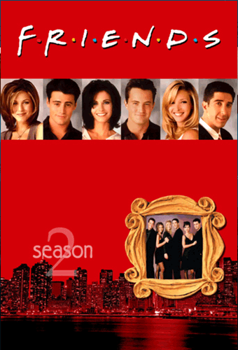
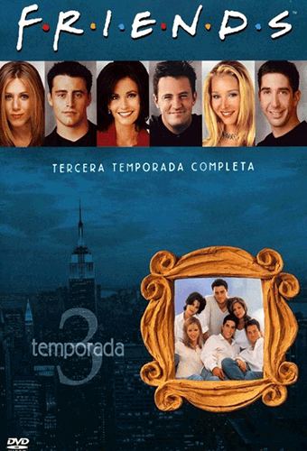
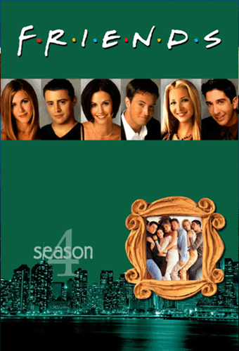
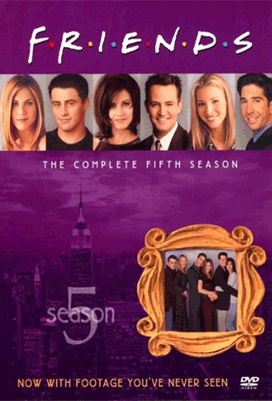
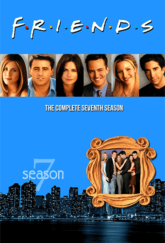
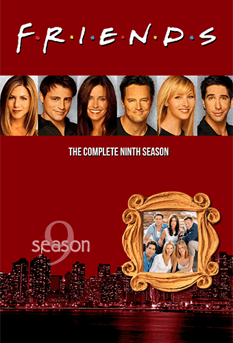
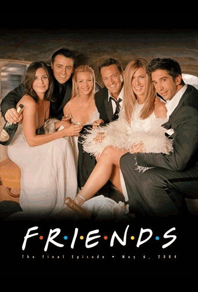

La primera temporada de la serie 'Friends' se estrenó el 22 de septiembre de 1994 en NBC y consta de un total de 24 capítulos,
consiguiendo por entonces una media de audiencia de 24,3 millones de espectadores en Estados Unidos.
La serie comienza en el café Central Perk y nos introduce los seis personajes principales cuando Rachel Green (Jennifer Aniston)
aparece por sorpresa vestida de novia después de dejar a su prometido, Barry, plantado en el altar. Allí se encuentra con Monica
Geller (Courteney Cox), una chef profesional, y el hermano de ésta, Ross (David Schimmer), paleontólogo. El grupo lo completan Joey
Tribbiani (Matt LeBlanc), actor frustrado y amigo de Ross del instituto, Chandler Bing (Matthew Perry) y Phoebe Buffay (Lisa Kudrow),
una peculiar masajista.
A lo largo de esta primera temporada, Rachel se va a vivir con Monica y comienza a trabajar como camarera en el Central Perk. Por su
parte, Ross descubre que siempre ha tenido sentimientos por Rachel, pero no se atreve a decírselo, sobre todo cuando aparece su
ex-mujer lesbiana, Carol, ahora embarazada. En cuanto a Chandler, rompe con su novia Janice y su peculiar personalidad, aunque
no termina de cortar del todo con ella. Al final de la temporada Rachel descubre por fin lo que Ross siente por ella, y ella se
da cuenta que es correspondido. Mientras tanto, Joey intenta desarrollar su carrera como actor aunque tiene más éxito como
mujeriego ligón.
La serie logró mayoritariamente críticas positivas en su primera temporada, aunque no se convirtió en el boom internacional
hasta más adelante. Aún así, la primera temporada de 'Friends' contó con un nutrido grupo de estrellas invitadas, como Noah
Wyle y George Clooney, muy populares por entonces gracias a la serie 'Urgencias' de la misma cadena. Otros cameos incluyen
a Leah Remini, Helen Hunt o Hank Azaria, entre otros.
FRIENDS: Temporada 1

Fecha inicio: 21 Septiembre 1995
Fecha final: 16 Mayo 1996
Capítulos: 24
La segunda temporada de 'Friends' se estrenó originalmente el 21 de septiembre de 1995, y cuenta con un total de 24 capítulos.
Con una media de 30 millones de espectadores en Estados Unidos, es la temporada más vista de todas, en especial gracias a emitir
un capítulo justo después de la Super Bowl, capítulo que alcanzó los 52,9 millones de espectadores, el más visto de toda la
historia de la serie, por delante incluso del último, que anotó 52,5 millones.
En esta temporada 2 la serie asienta su éxito y empieza a convertirse en todo un fenónemo de masas. En cuanto a las tramas, Rachel
está dispuesta a declararse a Ross, pero éste vuelve con Julie, una exnovia del instituto. Tras un tira y afloja y algunas
desavenencias, Rachel y Ross acaban por fin juntos.
Mientras, Monica consigue un importante trabajo como jefa de chefs en un prestigioso restaurante, que lo pierde a causa de aceptar
regalos por parte de un proveedor. Acaba trabajando como camarera en un restaurante para sobrevivir a la par que empieza una relación
con Richard Burke (Tom Selleck), 21 años mayor que ella.
Joey, por su parte, consigue su primer gran trabajo como actor en una telenovela, interpretando al neurocirujano Drake Ramoray, y se
independiza tras estar viviendo con Chandler. Pero, en una entrevista, afirma ser el autor de la mayoría de las frases de su personaje,
que los guionistas acaban matando para vengarse, por lo que Joey debe volver a vivir con Chander. Este último se apunta a una cita
anónima... que acaba siendo Jannice, su ex.
La segunda temporada de 'Friends' consiguió mejor recepción por parte de la crítica, y comienza a introducir alguno de los gags que serían
recurrentes en toda la serie, como la versión gorda de Monica en su juventud. En cuanto a los cameos de esta temporada, destacan Max
Wright, Brooke Shields, Jean-Claude Van Damme, Charlie Sheen y Julia Roberts.
FRIENDS: Temporada 3

Fecha inicio: 19 Septiembre 1996
Fecha final: 15 Mayo 1997
Capítulos: 25
La temporada 3 de 'Friends' se estrenó en NBC el 19 de septiembre de 1996, y cuenta con un total de 25 epsiodios.
En Estados Unidos, logró una media de audiencia de 24,9 millones de espectadores, siendo la tercera más vista, por
detrás de la segunda y la octava.
Las tramas de esta tercera temporada comienzan a tener más continuidad, a la vez que mejoran en críticas por parte
de los expertos. Chandler se pasa varios capítulos saliendo con Jannice, hasta que Joey pilla a Jannice besando a
su exmarido. Al final, Chandler y Jannice rompen, aunque Jannice se mantiene como personaje recurrente en la serie,
destacando su peculiar voz y su pesadez.
Por otro lado, Rachel deja su trabajo como camarera en Central Perk y se introduce en el mundo de la moda, como dependienta
de unos grandes almacenes de lujo. Ross siente celos de las largas horas de trabajo de Rachel y decide "tomarse un descanso"
de su relación con Rachel. Aunque Rachel le pilla liándose con Chloe y rompe con él de forma definitiva.
Monica empieza a salir con un millonario, Pete Becker, aunque no siente atracción por él. Joey también comienza una relación
con Kate, su compañera de actuación, que acaba rápidamente cuando ella acepta una oferta de trabajo en Los Ángeles.
A finales de la temporada, Ross comienza otra nueva relación, este vez con Bonnie, una amiga de Phoebe. Este nuevo romance
provoca los celos de Rachel, que intenta sabotearles y acaba confensando que sigue queriendo a Ross pese a todo. Ross tiene
al final que elegir entre Rachel o Bonnie.
Esta temporada 3 comienza a desarrollar más el pasado y las personalidades de los personajes. Sabemos por ejemplo que Phoebe
tiene una gemela, Ursula, interpretada por la propia Lisa Kudrow. También presenta a un personaje que acabaría convirtiéndose
en recurrente, el medio hermano de Phoebe, Frank Buffay Jr., interpretado por Giovanni Ribisi.
Los cameos incluyen actores como Tom Selleck, Isabella Rossellini -que se interpreta a ella misma-, Robin Williams, Billy Crystal,
Ben Stiller o David Arquette, que acabaría casándose con Courteney Cox un par de años más tarde.
FRIENDS: Temporada 4

Fecha inicio: 25 Septiembre 1997
Fecha final: 7 Mayo 1998
Capítulos: 24
La temporada 4 de 'Friends' se estrenó en Estados Unidos el 25 de septiembre de 1997 y cuenta con un total de 24 capítulos.
Logró una audiencia media de 24 millones de espectadores en NBC. Es considerada como una de las mejores temporadas de la serie.
Ross finalmente decide romper con Bonnie y quedarse con Rachel, aunque insiste que, cuando se acostó con Choloe, estaban
"tomándose un descanso", por lo que Rachel vuelve a cortar con él. Joey y Chandler se pelean por una mujer, Kathy, por la
que Chandler tiene sentimientos pero que acaba saliendo con Joey. Al final Chandler la bea y Joey y Chander acaban temporalmente
enemistados.
Phoebe pierde su trabajo como masajista tras liarse con uno de los clientes, y acaba acompañando a Monica en una aventura
empresarial, realizando catering a domicilio. Pero cuando Monica recibe una oferta para ser chef jefa en un restaurante,
acaba aceptándola. Phoebe, por su parte, decide quedarse embarazada para que su hermano pueda tener hijos por gestación subrogada.
Rachel y Ross comienzan nuevas relaciones: ella con Joshua, un cliente al que atiende como personal shopper, y él con Emiliy,
una mujer inglesa con la que se compromete al poco de comenzar a salir. La cuarta temporada acaba con la bosa de Ross y Emily
en Londres, en la que Chandler y Monica acaban durmiendo juntos por primera vez. Rachel, que de nuevo descubre sus sentimientos
por Ross, viaja a última hora a Londres para intentar acabar con la boda. Y, aunque finalmente no lo hace, Ross se equivoca
en el altar y nombra a Rachel en lugar de Emily.
El último capítulo -doble- de la temporada se grabó realmente en Londres, suponiendo la primera y única vez que 'Friends'
abandonó su habitual set de rodaje en Burbank. Fue, en parte, un guiño a la gran popularidad que la serie estaba cosechando
en el Reino Unido. Los cameos de esta cuarta temporada incluyen a Michael Vartan, Rebecca Romjin, Sherri Shepherd, Hugh Laurie,
Charlton Heston o la mismísima Sarah Ferguson, duquesa de York y ex mujer del Príncipe Andrés de Inglaterra, que se interpretó
a sí misma.
FRIENDS: Temporada 5

Fecha inicio: 24 Septiembre 1998
Fecha final: 20 Mayo 1999
Capítulos: 24
La temporada 5 de 'Friends' se estrenó en NBC el 24 de septiembre de 1998 y cuenta con un total de 24 episodios.
Para muchos críticos, se trata de una de las dos mejores de la serie, y en audiencia en Estados Unidos consiguió
una media de 23,5 millones de espectadores durante su emisión.
La quinta temporada arranca tras la boda de Ross y Emily, cuando Ross mencionó a Rachel en la ceremonia. Emily enfurece
y Rachel vuelve a admitir su amor su por Ross, aunque le recomienda que intente salvar su matrimonio. Las cosas no salen
bien por culpa de los celos de Emily, y la pareja se separa. Ross acaba pagándolo en su trabajo, y el museo le suspende de
empleo, por lo que acaba mudándose con Joey y Chandler antes de buscarse un apartamento en el edificio de al lado.
Por otro lado, tras empezar a salir juntos, Monica y Chandler intentan mantener en secreto su relación, aunque a medida que
avanza la temporada acaban por desvelarla.
En el capítulo número 100 de la serie, Phoebe da a luz a los trillizos de su hermano por gestación subrogada: un niño, llamado
Frank Jr., y dos niñas, llamadas Leslie y Chandler. También comienza una relación con un oficial de policía, Gary, interpretado
por Michael Rapaport. Rachel, por su parte, consigue un trabajo en Ralph Lauren.
En el final de la temporada, Monica y Chandler deciden casarse por sorpresa en una capilla de Las Vegas, aunque cuando están a
punto de entrar a la ceremonia, ven salir a Ross y Rachel borrachos de la capilla...
El episodio 14, "En el que todos se enteran", ha sido elegido por varios críticos como uno de los mejores de toda la serie.
En esta temporada 5 hay menos cameos de famosos, destacando los de Iqbal Theba o Soleil Moon Frye ('Punky Brewster') entre otros.
FRIENDS: Temporada 6
Fecha inicio: 23 Septiembre 1999
Fecha final: 18 Mayo 2000
Capítulos: 25
La temporada 6 de 'Friends' se estrenó en Estados Unidos el 23 de septiembre de 1999, y cuenta con un total de 25 episodios.
En NBC logró una audiencia media de 20,7 millones de espectadores, siendo la segunda menos vista de toda la serie.
La sexta temporada arranca desvelando que Ross y Rachel se casaron borrachos en la capilla de Las Vegas, aunque ninguno de
los dos lo recuerda. Ross le promete a Rachel la anulidad, aunque nunca la pide para no tener otro matrimonio fracasado, y,
ya fuera de plazo, tienen que divorciarse si finalmente quieren disolver la boda.
Por otro lado, Monica y Chandler deciden irse a vivir juntos, lo que obliga a Rachel a irse a vivir con Phoebe, y las cosas no
terminan de arrancar muy bien entre ellas. Además se les quema el piso.
Joey empieza a salir con Janine, su nueva compañera de piso, hasta que descubre que ésta no soporta a Monica y Chandler. Finalmente
rompen. Joey consigue un nuevo trabajo en una serie junto a un robot, antes de trabajar brevemente en el Central Perk.
Ross empieza a salir con una estudiante, Elizabeth, y el padre de esta, Paul (Bruce Willis) acaba saliendo con Rachel, aunque todo
acaba saliendo mal y las dos relaciones terminan. Mientras, Ross consigue un trabajo de profesor en la New York University.
Por último, Chandler y Monica no terminan a darse el paso para casarse. Monica se apunta medio en broma en una lista de espera para
casarse en un museo sin que Chandler se entere, aunque éste acaba sabiéndolo cuando le llaman por una cancelación. Chandler entra en
pánico, aunque ya sabía de su deseo de querer casarse con Monica, aunque siempre lo negaba en público. Al intentar declararse en un
restaurante, aparece por sorpresa un ex novio de Monica que le dice que quiere casarse con ella. En el capítulo final de la temporada,
finalmente Monica le pide a Chandler matrimonio.
Esta quinta temporada cuenta entre el elenco de actores invitados a Elle Macpherson, Bruce Willis, Reese Witherspoon, Tom Selleck o Ralph
Lauren, entre otros.
FRIENDS: Temporada 7

Fecha inicio: 12 Octubre 2000
Fecha final: 17 Mayo 2001
Capítulos: 24
La séptima temporada de 'Friends' se estrenó en la cadena NBC el 12 de octubre de 2000 y consta de un total de 24 capítulos.
La audiencia media en Estados Unidos fue de 20,2 millones de espectadores, siendo la temporada menos vista de la serie.
En cuanto a tramas, la temporada 7 se centra en los preparativos de la boda de Monica y Chandler y todos los problemas que
estos encuentran. Mientras, Joey vuelve a la telenovela 'Los días de nuestra vida' después de cancelarle su otra serie.
Su personaje, el Dr. Drake Ramoray, llevaba cuatro años en coma y revive con un transplante de cerebro de otro personaje.
También, Phoebe hace obra en su piso y manda a Rachel a vivir con Joey.
Por otro lado, Rachel es ascendida en Ralph Lauren y tiene que contratar a un asistente. Elige a un guapo joven, Tag Jones,
en lugar de una mujer preparada. Tag y Rachel comienzan una relación, que deben mantener en secreto del resto de sus compañeros
de trabajo, aunque finalmente Rachel decide cortar con Tag.
A pocas horas de celebrarse la boda entre Monica y Chandler, Chandler entra en pánico y desaparece, mientras escucha a Phoebe y
Rachel hablar sobre un test de embarazo. Los chicos asumen que Monica está embarazada, y Chandler no acaba de hacerse a la idea
de la paternidad, por lo que intenta escaparse de la ceremonia.
Finalmente, convencen a Chandler para que se case con Monica. La sorpresa llega cuando Monica desvela que ella no está embarazada,
y se descubre que el test positivo es de... Rachel.
Entre los cameos con los que cuenta la séptima temporada destacan los de Susan Sarandon, Denise Richards y Winona Ryder. Aunque
fue la temporada menos vista, el doble capítulo final de la boda de Monica y Chandler superó los 30 millones de espectadores en
su primera emisión.
FRIENDS: Temporada 8
Fecha inicio: 27 Septiembre 2001
Fecha final: 16 Mayo 2002
Capítulos: 24
La temporada 8 de 'Friends' se estrenó en Estados Unidos el 27 de septiembre de 2001 y tiene un total de 24 capítulos.
La audiencia media de su emisión en NBC fue de 24,5 millones de espectadores.
La octava temporada justo arranca donde acabó la anterior, en el convite de la boda de Monica y Chandler. Se centra en
el embarazo de Rachel, que se confirma mediante un segundo test de embarazo. Pronto se descubre que Ross es el padre, y
los dos llegan a un acuerdo para criar a su hijo juntos sin volver a mantener una relación sentimental. Por tanto, Ross
empieza a salir con Mona, una compañera de trabajo de Monica.
Joey descubre que empieza a tener sentimientos por Rachel, y la anima a irse a vivir al apartamento de Ross para hacerle
partícipe del embarazo. La intromisión de Rachel pronto acaba por espantar a Mona, que rompe con Ross. Joey confiesa a Ross
que está enamorado de Rachel, antes de declararse a la propia Rachel, que lo rechaza.
A medida que avanza el embarazo de Rachel, Ross está cada vez más convencido de volverle a pedir salir. La madre de Ross le
anima dándole un anillo de compromiso familiar, que Ross se guarda en la chaqueta. En medio de un largo parto, el anillo de
Ross cae al suelo y Joey lo recoge. Rachel se piensa que Joey le está proponiendo matrimonio y dice que sí aturdida por el
parto, antes de que Ross pueda volver a declararse. Rachel da a luz a una niña, Emma.
El parto de Rachel anima a Monica y Chandler a querer buscar descendencia, y empiezan a intentarlo por todas partes, comenzando
por el hospital donde Rachel da a luz.
La temporada 8 de 'Friends' cuenta con el cameo de Brad Pitt, que por entonces mantenía una relación sentimental con Jennifer
Aniston. El primer capítulo de la temporada se estrenó tan solo 16 días después de los ataques del 11 de Septiembre, y
está dedicado a la ciudad de Nueva York, en la que se ambienta la serie.
Además, el tercer capítulo de la temporada, incluía una trama en la que Monica y Chandler se iban de viaje de novios y Chandler
hacía una broma sombre bombas al subir al avión, y acababan siendo detenidos e interrogados. Estas escenas se grabaron antes de
los atentados y fueron eliminadas del capítulo final, sustituidas por otra trama en la que Monica tenía envidia de otras parejas
que llegaron antes que ella al resort y recibieron regalos extra.
FRIENDS: Temporada 9

Fecha inicio: 26 Septiembre 2002
Fecha final: 15 Mayo 2003
Capítulos: 24
La temporada 9 de 'Friends', penúltima temporada de la serie, se estrenó en Estados Unidos el 26 de septiembre de 2002. Tiene 24 capítulos
y logró una audiencia media de 21,8 millones de espectadores en su primera emisión en NBC.
Por un lado, las tramas se centran en los problemas de Monica y Chandler para quedarse embarazados. Primero él se muda a Tulsa a trabajar
y Monica cambia de trabajo a otro restaurante. La pareja pasa demasiado tiempo separados y Chandler decide dejar su trabajo para estar más
cerca de Monica. Pese a todo, la pareja acaba descubriendo que son físicamente incapaces de ser padres y, tras considerar muchas opciones,
deciden adoptar.
Por otra parte, Ross y Rachel siguen viviendo juntos con su hija Emma tras el malentendido de la petición de matrimonio de Joey. Rachel
se piensa que su compañero de trabajo Gavin quiere quedarse con su puesto, y vuelve antes de tiempo a Ralph Lauren. Al final Gavin está
interesado en mantener una relación con Rachel y, aunque ésta le rechaza, Ross se entera de que se han besado, y empieza a salir con otras
mujeres para vengarse.
Phoebe empieza a salir con Mike Hannigan (Paul Rudd) pero, cuando le dice que no quiere volver a casarse, Phoebe vuelve brevemente con su
ex David, hasta que Mike le pide matrimonio a Phoebe.
Rachel y Emma se van a vivir con Joey, mientras Joey empieza a salir con Charlie, una paleontóloga de la que Ross se siente atraído.
Cuando Rachel los ve juntos, se da cuenta que también tiene sentimientos por Joey. Joey se acaba enterando y, aunque en un primer momento
la rechaza para no herir a su amigo Ross, acaban la temporada besándose después de que Ross se liara con Charlie.
Los cameos de la novena temporada incluyen a Aisha Tyler, Dermot Mulroney, Melissa George, Christina Applegate, Freddie Prinze Jr. y Jeff
Goldblum, entre otros.
FRIENDS: Temporada 10

Fecha inicio: 25 Septiembre 2003
Fecha final: 6 Mayo 2004
Capítulos: 20
La décima y última temporada de 'Friends' se estrenó en NBC el 25 de septiembre de 2003. Es la más corta de la serie, con tan sólo
20 capítulos, y logró una audiencia media de 22,8 millones de espectadores. Pese a todo, el último capítulo, emitido el 6 de mayo
de 2004, fue el segundo más visto de toda la serie con 52,5 millones de televidentes.
En cuanto a tramas, la temporada 10 sirve para cerrar las historias de todos los personajes. Joey y Rachel intentan empezar a
mantener una relación, pero tras varios intentos desastrosos, deciden que lo mejor es seguir siendo amigos. Rachel es despedida
de Ralph Lauren cuando su jefe la oye hacer una entrevista de trabajo para Gucci. Finalmente, Louis Vuitton le ofrece un trabajo
en París.
Por otra parte, Joey casa a Phoebe y Mike en el Central Perk en medio de una tormenta que paraliza la ciudad. Chandler y Monica,
por su lado, encuentran por fin a una madre embarazada que quiere darles su hijo en adopción. Deciden comprarse una casa más grande
en los suburbios y mudarse allí para criar al niño, lo que despierta los celos de Joey, que no quiere quedarse sin sus amigos.
Finalmente, Monica y Chandler acaban teniendo gemelos.
Aunque en un principio Ross piensa que Rachel no quiere irse a París, ésta acepta la propuesta de Louis Vuitton. En la fiesta de
despedida, no le dice adiós a Ross, lo que provoca que Ross se enfrente a Rachel, y acaban acostándose juntos. Ya en el avión,
Rachel decide llamar a Ross para despedirse, y se da cuenta que está enamorada de él, bajándose en el último momento.
La serie acaba con los seis protagonistas abandonando el reconocido apartamento de la serie y tomando una útima taza de café en
el Central Perk.
Los cameos de esta última temporada incluyen a Aisha Tyler, Anna Faris, Christina Applegate, Danny DeVito, Jane Lynch, Jennifer
Coolidge y Dakota Fanning. Tras el final de la serie, se emitió un especial con los actores que anotó 36,89 millones de espectadores.